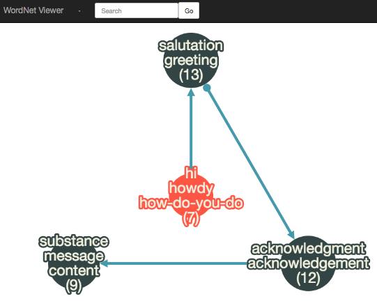
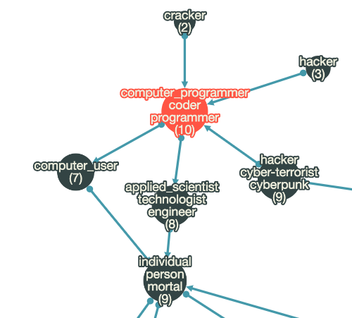
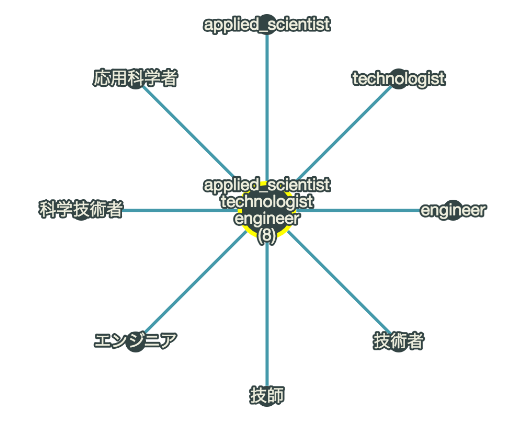
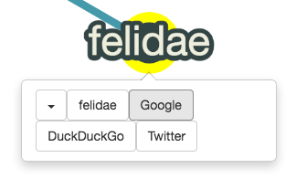

Posted on May 6
Cytoscape.js is a JavaScript library for graph visualization that enables rendering network structures on a web browser. The official site has some demonstrations that show its capabilities. I was fascinated and started playing with its easy-to-use API.
Also, I was interested in WordNet, which has nothing to do with Cytoscape.js, and wanted a tool for it. WordNet is a large lexical database that groups synonymous words into an unordered set called "synset" and contains relations among synsets. Out of curiosity, I wrote some queries to examine what is inside the Japanese WordNet database. Then, I tried visualizing the results with Cytoscape.js. Finally, I ended up building the following simple web app.
WordNet Viewer (Heads up! This site is a little energy consuming. Do not visit when the battery is running low:)

A graph is displayed at the center of the page.
Each vertex of the graph represents a synset and each edge represents relationship between two synsets. The node at the tip of an arrow is a synset of the hypernym (in most cases) of the synset at the origin. (Some arrows represent other relationships such as membership relation but the app does not make clear distinction among them.)
Nodes and edges can be moved around by dragging. And the viewport can be panned and zoomed by dragging the background and using mouse wheel.
Typing a word in the text box at the topmost navbar and hitting Go button causes the app to look up the synset containing the word entered. If a synset is found, the app visualizes the network involves it.
The following example is a graph rendered for a word "programmer:"

Clicking a node causes the app to change the layout of the graph to show all the words in the synset of the clicked node.

Each word in a synset can be clicked to show a tooltip carrying some buttons. One of them navigates you to Google for instance.

The cytoscape-qtip plugin is used to enable this.
The web app is made up of the tree parts below:
sequel Ruby Gem.The advantage of using Cytoscape.js is not only rendering of graphs but also builtin support for standard gestures to pan and zoom the viewport and many many others. Once we have graph data in a format taylored to Cytoscape.js, we are ready to enjoy the features provided by the library.
Below are very short excerpts (modified and simplified) from the code in the app.
A sample code snippet for initializing visualization of a given graph:
var cy = cytoscape({ // Initialization of Cytoscape core object.
container: document.getElementById('cy'), // A DOM element to contain a graph rendering.
elements: graph, // A graph data in JSON.
style: [
{
selector: 'node',
style: {
label: 'data(label)'
}
}
]
});
A CSS-like selector for selector specifies elements in a given graph.
Some examples of selector:
| selector | objects selected |
|---|---|
node |
All nodes. |
edge |
All edges. |
#foo |
A graph element ele where ele.data.id is "foo". |
.foo |
A graph element classed foo. |
[some_parameter = "some value"] |
Graph elements ele where ele.data.some_parameter is "some value". |
[?some_parameter] |
Graph elements ele where ele.data.some_parameter is a truthy value. |
:visible |
Visible graph elements. |
In the above example, data(label) is specified to show ele.data.label as a label for an element ele selected by the selector.
A sample graph data consisting of two vertices and an edge connecting them
(from source to target):
{
elements: [
// Two vertices
{
group: "nodes",
data: {id: "node1", label: "label for node1"}
},
{
group: "nodes",
data: {id: "node2", label: "label for node2"}
},
// An edge from "node1" to "node2"
{
group: "edges",
data: {id: "node1-to-node2", source: "node1", target: "node2"}
}
]
}
An example use of dijkstra where the distance from the node with truthy data.start to the given node n is calculated:
var dijkstra = cy.elements().dijkstra('[?start]', function() {return 1});
var dist = dijkstra.distanceTo(n);
A style sample where a mapper mapData is used to linearly change the width of a node according to its data.weight value:
{
selector: 'node',
style: {
'shape': 'circle',
'width': 'mapData(weight, 0, 10, 20, 60)',
'label': 'data(label)',
/* ... */
}
}
An example use of the concentric layout to position nodes so that they are centered around some node:
{
name: 'concentric',
concentric: function(n) {
var d = dijkstra.distanceTo(n);
return cy.nodes().length - d;
},
levelWidth: function(nodes) {return 1;}
};
The positions of nodes are determined by the concentric function. The higher the return value of the function applied to a node, the nearer the center it is placed.
The graph data is constructed by firstly querying SQLite 3 database of Japanese WordNet and secondly formatting the retrieved results for Cytoscape.js.
There is a Ruby Gem wordnet but we cannot use it for Japanese WordNet
because its schema seems to be different from English WordNet.
Anyway, we can query the database directly.
The sequel gem is quite handy for such tasks because
we can construct SQL queries by chaining methods as is often done in Ruby.
A sample code for assigning a new Sequel instance to an instance variable @db of some (arbitrary) class based on the SQLite 3 database file ./wnjpn.sqlite3:
require 'sequel'
# ...
@db = Sequel.sqlite('./wnjpn.sqlite3')
To look up synsets from a given word lemma lemma,
we specify the word table (@db[:word]), join the sense table,
and select columns of interest.
def get_word_synsets(lemma)
words = @db[:word].where(:lemma => lemma)
senses = words.join(:sense, :wordid => :wordid)
senses.select(:synset, Sequel.qualify(:word, :lang), Sequel.qualify(:word, :lemma))
end
Sequel.qualify(:word, :lemma) can be written also as Sequel[:word][:lemma].
The corresponding SQL query is as follows:
SELECT "synset", "word"."lang", "word"."lemma" FROM "word"
INNER JOIN "sense" ON ("sense"."wordid" = "word"."wordid")
WHERE ("lemma" = lemma)
The synlink table (@db[:synlink]) has pairs of (synset1, synset2) each of which has a type link. We want pairs of link type hype. Straightforward in Sequel:
def synset_to_hypernyms(synset)
@db[:synlink].where(:synset1 => synset).where(link: 'hype')
.select(:synset1, :synset2)
end
The corresponding SQL query is as follows:
SELECT "synset1", "synset2" FROM "synlink" WHERE (("synset1" = synset) AND ("link" = "hype"))
2015 My gh-pages